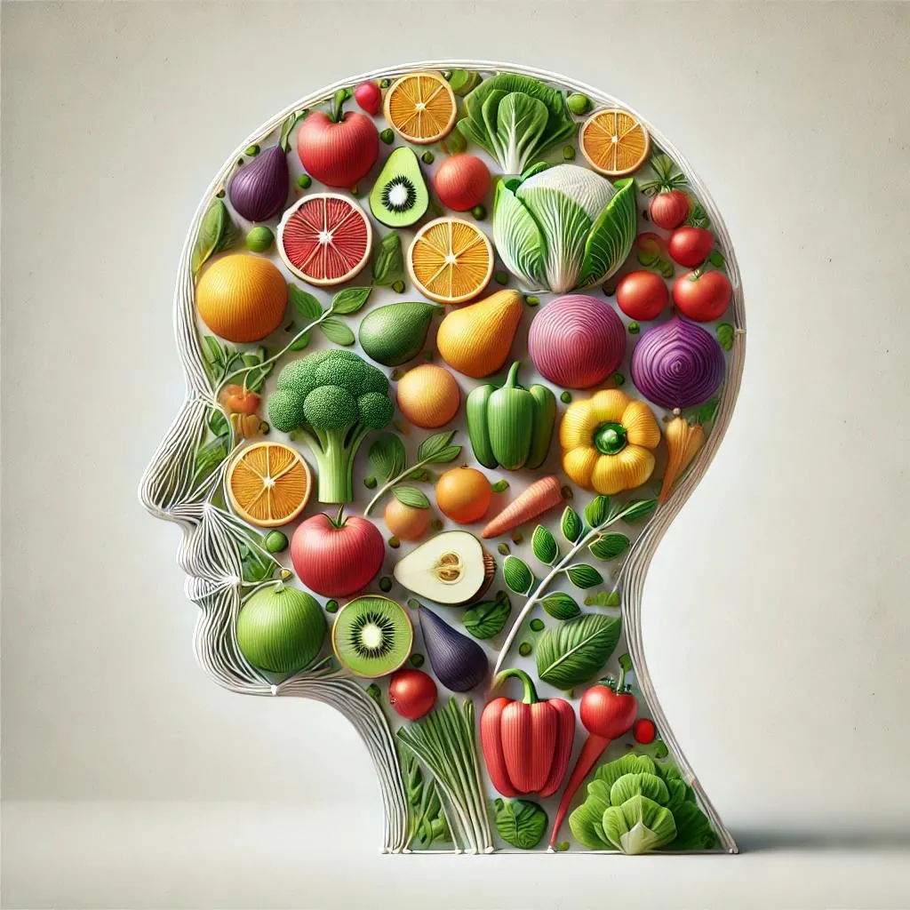

Nutrición especializada en salud hormonal femenina
Consulta presencial
Evaluamos tus hábitos alimenticios, medimos tu progreso y ajustamos tu plan para garantizar resultados sostenibles y saludables.
Consulta a distancia
Este tratamiento es realizado por zoom, meet, videollamada WhatsApp y mail. Los planes son al igual que presencial.

Atención personalizada
Planes personalizados, adecuados a cada paciente, a su patología, sus gustos, su trabajo y entorno familiar.